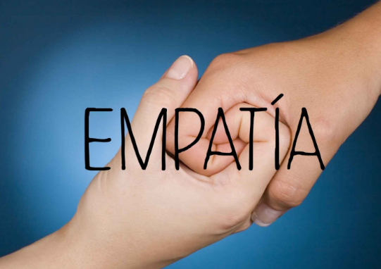
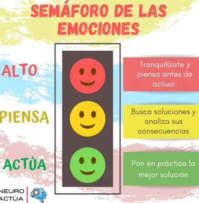

Bienvenidos al Portal de ConvivenciaUna convivencia escolar sana se construye diariamente a través de la participación de toda la comunidad: estudiantes, docentes y padres de familia. Cuando desarrollamos ambientes basados en el respeto mutuo, no solo mejoramos las calificaciones, sino que también protegemos la salud mental de los jóvenes. El PAEC se enfoca en tres ejes transversales: la inclusión, la equidad de género y la resolución pacífica de conflictos. Establecer relaciones saludables en el aula reduce significativamente los índices de acoso y violencia escolar. Al brindar herramientas socioemocionales óptimas, permitimos que los estudiantes reconozcan el valor de la diversidad y colaboren activamente en la creación de un entorno seguro para todos. |


